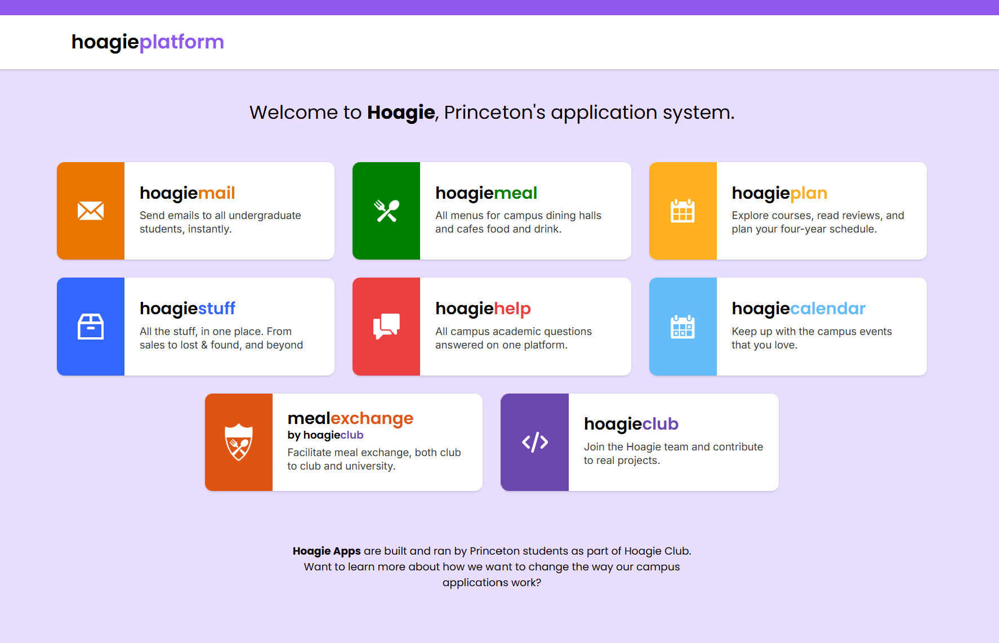
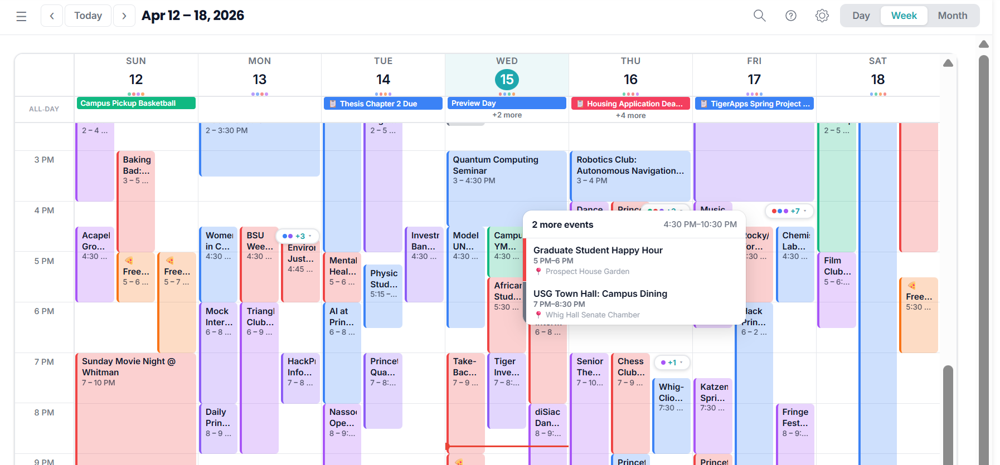
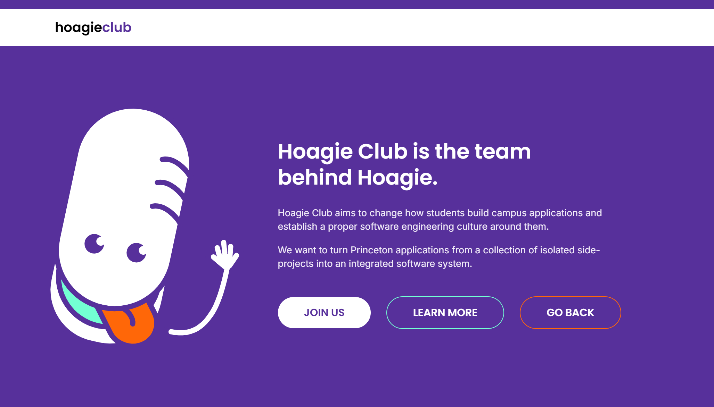

Rebuilding Hoagie around event discovery.
My rolePM for HoagieMail: fixed the editor, ran 40+ user interviews, and figured out that the email complaints were really about not knowing what was happening on campus. Now Head of Product across the six Hoagie apps, writing the Calendar v1 spec and the 2026-27 roadmap.
The context
HoagieMail is Princeton's student-run email platform, processing hundreds of sends per week from student organizations, departments, and faculty across a community of 9,000+ people. When I joined as Product Manager in fall 2025 the product already worked, so nobody had looked hard at what using it every day actually felt like.
Phase 1: fix what already exists
Before building anything new, I focused on what was already in students' hands. I cleaned up the editor that 4,000+ student senders compose in, which mostly meant cutting steps out of the send flow. Then I built reusable templates so a club email arrives with its subject, date, and link in the same place every time, and worked through the usability fixes sitting in the backlog. None of it was glamorous, but it went out to people who send about 1,200 emails in a normal week.
The insight that changed the roadmap
Across 40+ interviews and 200+ survey responses I heard the same frustration, which was that important things were getting buried. Students had stopped believing anything landing in their inbox would be worth opening. The complaint arrived as an email problem and I treated it as one for a few weeks. What students actually couldn't do was find out what was happening on campus that week, which is a discovery problem.
Students already had more information than they could read. What they had stopped believing was that any of it would matter to them. That reframe became the foundation for HoagieCalendar, a centralized, filterable calendar that aggregates campus events into something students would actually check.
Scoping the Calendar MVP
Early designs assumed full email automation, where events would parse straight out of incoming mail. Engineering flagged that authentication constraints put that beyond the timeline, so we cut it. Club leaders add events with a one-click copy template instead, and there is a checkbox on the send form if they want it on the calendar at all.
Two more things came off. Advanced filtering by category is gone for v1, since the first job is just getting every event to populate and show up at all. Letting people edit an event after it lands on the calendar is gone too, and that was the harder call. Editing means keeping two copies of the same event in sync, which makes everything after it a lot more complicated.
I wrote the user stories, which are one-line descriptions of what a person is trying to do. I also wrote the acceptance criteria, the list of things that have to be true before we call it done. Then I built the Figma prototypes and ran them past the pilot clubs, fixing what broke each round. The calendar is in beta with those clubs and not public yet, since we want to see whether people come back to it a second week before we automate anything.

Growing into head of product
In April 2026, the role expanded. I now work across all six Hoagie apps, four live and two still being built. HoagieMail is the sender. HoagiePlan maps out a schedule and four years of classes. HoagieMeal covers dining, and it exists since someone with an allergy got tired of asking at every station. HoagieStuff is a marketplace, mostly senior sales. HoagieClub is the club itself. Between them they reach more than 90% of Princeton undergrads. I scoped the 2026-27 roadmap before the full role started, and I am running it now. That means the two apps still in build, one login that works across all six, and a shared set of buttons and type so they stop looking like six different websites.
Going from one product to six has been harder than I expected, and most of the difficulty is deciding what not to work on. The standing choice is between making the four live apps better and finishing the two that aren't built yet. Improving what exists usually wins, since that is where the undergrads already are. The other constant is keeping six apps looking like one product without slowing the teams down, which is a real cost every time we ship something new. The rest of the job is people: newer members who need mentoring, and devs and PMs who need to be taught how to talk to each other, since nobody arrives knowing that.

What I've learned
The templates I wrote in the fall are still what most senders start from, and the editor fixes went out to 4,000+ people who will never know a PM touched them. The calendar is in beta with the pilot clubs, and email parsing is still cut, so club leaders paste events in with the copy template instead.
Watching engineering cut the automation I had designed the whole flow around mostly felt like having wasted six weeks. It turned out to be the only reason the thing shipped at all.